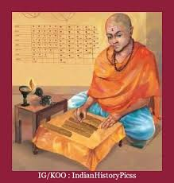

| Maths |  |
| Brahmagupta | Life Of Bramhagupta |
Brahmagupta (c. 598 – c. 668 CE) was an Indian mathematician and astronomer. He is the author of two early works on mathematics and astronomy: the Brāhmasphuṭasiddhānta (BSS, "correctly established doctrine of Brahma", dated 628), a theoretical treatise, and the Khandakhadyaka ("edible bite", dated 665), a more practical text.
Life and careerBrahmagupta, according to his own statement, was born in 598 CE. Born in Bhillamāla in Gurjaradesa (modern Bhinmal in Rajasthan, India) during the reign of the Chavda dynasty ruler Vyagrahamukha. He was the son of Jishnugupta and was a Hindu by religion, in particular, a Shaivite. He lived and worked there for a good part of his life. Prithudaka Svamin, a later commentator, called him Bhillamalacharya, the teacher from Bhillamala. In the year 628, at the age of 30, he composed the Brāhmasphuṭasiddhānta ("improved treatise of Brahma") which is believed to be a revised version of the received Siddhanta of the Brahmapaksha school of astronomy. Scholars state that he incorporated a great deal of originality into his revision, adding a considerable amount of new material. The book consists of 24 chapters with 1008 verses in the ārya metre. A good deal of it is astronomy, but it also contains key chapters on mathematics, including algebra, geometry, trigonometry and algorithmics, which are believed to contain new insights due to Brahmagupta himself. Later, Brahmagupta moved to Ujjaini, Avanti, a major centre for astronomy in central India. At the age of 67, he composed his next well-known work Khanda-khādyaka, a practical manual of Indian astronomy in the karana category meant to be used by students.
Brahmagupta died in 668 CE, and he is presumed to have died in Ujjain.
ArithmeticThe four fundamental operations (addition, subtraction, multiplication, and division) were known to many cultures before Brahmagupta. This current system is based on the Hindu–Arabic numeral system and first appeared in the Brāhmasphuṭasiddhānta. Brahmagupta describes multiplication in the following way:
The multiplicand is repeated like a string for cattle, as often as there are integrant portions in the multiplier and is repeatedly multiplied by them and the products are added together. It is multiplication. Or the multiplicand is repeated as many times as there are component parts in the multiplier.
ZeroBrahmagupta's Brahmasphuṭasiddhānta is the first book that provides rules for arithmetic manipulations that apply to zero and to negative numbers. The Brāhmasphuṭasiddhānta is the earliest known text to treat zero as a number in its own right, rather than as simply a placeholder digit in representing another number as was done by the Babylonians or as a symbol for lack of quantity as was done by Ptolemy and the Romans. In chapter eighteen of his Brāhmasphuṭasiddhānta, Brahmagupta describes operations on negative numbers. He first describes addition and subtraction,
[The sum] of two positives is positives, of two negatives negative; of a positive and a negative [the sum] is their difference; if they are equal it is zero. The sum of a negative and zero is negative, [that] of a positive and zero positives, [and that] of two zeros zero.
A negative minus zero is negative, a positive [minus zero] is positive; zero [minus zero] is zero. When a positive is to be subtracted from a negative or a negative from a positive, then it is to be added.
Brahmagupta's formula
Diagram for reference
Main article: Brahmagupta's formula
Brahmagupta's most famous result in geometry is his formula for cyclic quadrilaterals. Given the lengths of the sides of any cyclic quadrilateral, Brahmagupta gave an approximate and an exact formula for the figure's area,
The approximate area is the product of the halves of the sums of the sides and opposite sides of a triangle and a quadrilateral. The accurate [area] is the square root from the product of the halves of the sums of the sides diminished by [each] side of the quadrilateral.
THANK YOU!